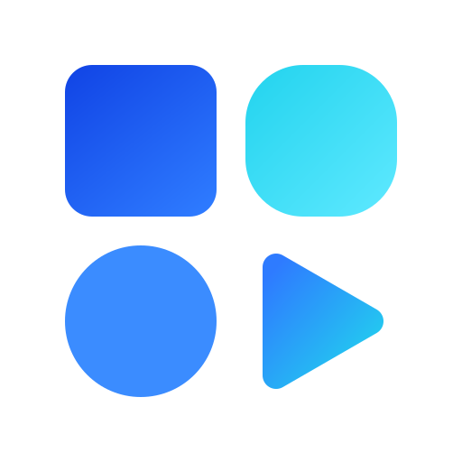

O ar à volta é a altura de uma app da grelha — nada entra nesse espaço. Abaixo dos 16 px usa-se só o ícone, nunca a marca com as palavras.
Torto, desmaiado, esticado, e azul sobre azul. O último é o mais fácil de fazer sem dar por isso — o ícone precisa de contraste com o que está atrás.